Skattejakten
Du lager et lite spill der helten løper rundt på en eng, plukker mynter og passer seg for et slim. Hvert steg er kort, og hver oppgave er bare noen få linjer. Over hver oppgave står det et eksempel i koden som ligner på det du skal skrive. Hver økt starter med en ny fil der det som ble laget forrige gang, allerede er på plass.
Slik jobber du
- Åpne mappen
Skattejakteni VS Code eller IDLE. - Hver økt har sin egen fil:
steg1.py,steg2.py… Kjør den med F5. - Der det står
OPPGAVEogpass, skal du skrive koden. - Kjør spillet ofte. Får du en feil, står den i rødt i spillvinduet og i terminalen.
- Ikke endre
spillmotor.py– den gjør jobben bak kulissene. - Vil du beholde noe du har laget selv, kopierer du det over i neste stegfil.
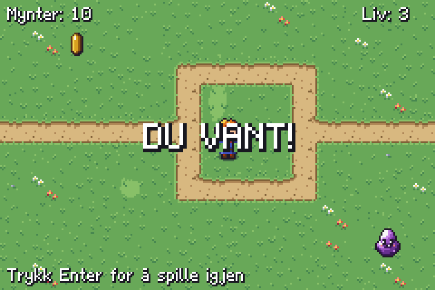
De 6 stegene
- 1Din egen eng – I dag lager du verdenen i spillet: en eng med gress, blomster og en sti.
- 2Gå med piltastene – I dag får helten bevege seg! Spillet kjører funksjonen
oppdater()60 ganger i sekundet. - 3Hold deg på skjermen – Nå kan helten gå rett ut av skjermen og forsvinne.
- 4Plukk opp mynten – I dag kan helten ta mynten! Når han går på den, skal det si «pling», mynten skal hoppe til et nytt sted, og du får ett poeng.
- 5Pass deg for slimet! – Nå kommer et slim som kryper etter helten.
- 6Vinn spillet – I dag blir spillet ferdig: det får musikk, slimet blir raskere for hver mynt du tar, du VINNER når du har 10 mynter, og du kan spille igjen med Enter.
Din egen eng
I dag lager du verdenen i spillet: en eng med gress, blomster og en sti. Du setter ut helten og en mynt som snurrer. Ingenting beveger seg ennå – det kommer i neste steg.
Kom i gang
Åpne steg1.py og kjør den med F5. Du ser enga, og helten står oppe i hjørnet. Les kommentarene øverst i fila (linjene som starter med #). Dem leser Python ikke – de er bare til deg.
Se forklaringen under før du begynner. Den viser koden linje for linje.
Fil: steg1.py
Teori til dette steget: 1. Hvordan et program kjører · 3. Koordinater og skjermen · 12. Figurer, objekter og kollisjon
Nytt i dag
- kjøre et program med F5
- kartet er en liste med tekst
- x og y: hvor ting står på skjermen
- Figur("bilde", x, y)
- variabler: helt og mynt
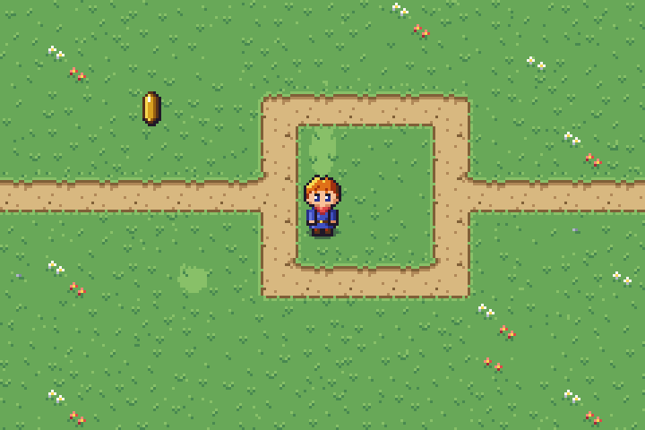
Forklaring av koden
Bla gjennom forklaringen før du begynner, og gå tilbake til den når du står fast.
Den viser koden i steg1.py, hva som skjer på skjermen, og hva programmet husker.
Der det står OPPGAVE, er det du som skal skrive koden.
Åpne forklaringen i stort vindu ↗ · Neste: mellomrom eller → (klikk i forklaringen først)
Oppgavene
I steg1.py står det OPPGAVE og pass der
det mangler kode. Bytt ut pass med din egen kode. Kjør spillet ofte!
1. Tegn på kartet liste med tekst
Kartet
ENGENer 10 linjer med tekst. Hvert tegn er én rute på skjermen. Bytt noen av punktumene.med*for å lage blomster, eller med=for å lage mer sti. Kjør og se hva som skjer!Pass på: Hver linje må ha nøyaktig 15 tegn, og fnuttene
"i begge ender må stå der de står.Hint 1
Bytt bare ut tegn – ikke legg til eller fjern noen. Da blir linja like lang som før.
Hint 2
Slik kan den første linja se ut med flere blomster:
"..*......*.*.,.",
2. Flytt helten x og y
Helten står i
0, 0, altså helt oppe i venstre hjørne. Flytt ham midt på skjermen ved å bytte ut0, 0med112, 64.- Det første tallet er x: hvor langt mot høyre (0 til 240).
- Det andre tallet er y: hvor langt ned (0 til 160).
Prøv gjerne andre tall også. Hva skjer hvis y er 300?
Hint 1
Du skal bare endre de to tallene i linja som starter med
helt = Figur(.Hint 2
helt = Figur("helt_ned_1", 112, 64, skygge=True)3. Legg ut en mynt Figur
Lag en mynt på samme måte som helten er laget. Bildet heter
"mynt_1". Velg selv hvor den skal stå.Finn
# OPPGAVE 3i fila. Under står detpass– bytt utpassmed din linje. Mønsteret er:navn = Figur("bildenavn", x, y)Hint 1
Variabelen skal hete
mynt. Den trenger vi i oppgave 4.Hint 2
mynt = Figur("mynt_1", 48, 32)4. Få mynten til å snurre animer
En mynt som snurrer, er fire bilder som byttes etter hverandre:
mynt_1,mynt_2,mynt_3ogmynt_4. Bytt utpassunder# OPPGAVE 4med denne linja:mynt.animer(["mynt_1", "mynt_2", "mynt_3", "mynt_4"], fart=8)
Kjør spillet. Prøv så
fart=2ogfart=30. Lavere tall gir raskere snurring.Vis hint
Står det
NameError: name 'mynt' is not defined? Da mangler oppgave 3, eller variabelen er stavet annerledes.5. Gi spillet et navn tekst
Helt nederst i fila står
start(...). Den starter spillet. Teksten i fnuttene står øverst i spillvinduet. Skriv navnet på spillet ditt der, for eksempel"Skattejakten"eller"Olas skattejakt".Vis hint
Bytt bare ut teksten mellom fnuttene. Fnuttene må stå.
Ekstra utfordringer
For deg som blir ferdig tidlig. Her er det ingen hull i koden – du bestemmer selv hvordan.
A. Flere ting på enga
Sett ut flere figurer: en stein, en busk eller et tre. Bildene heter
"stein","busk"og"tre". Se alle bildene under Oppslag.Vis hint
Hver ting trenger sin egen linje og sitt eget navn, for eksempel
stein = Figur("stein", 160, 96).B. Glad helt
Bytt bildet til helten fra
"helt_ned_1"til"helt_jubel". Hvilke andre helt-bilder finnes?Vis hint
Se under Oppslag – alle bildene som starter med
helt_.C. Ditt eget kart
Tegn enga helt om, for eksempel med en sti rundt hele kanten. Bruk også
,for litt annet gress.
Gå med piltastene
I dag får helten bevege seg! Spillet kjører funksjonen oppdater() 60 ganger i sekundet. Hver gang flytter vi helten litt, og da ser det ut som han går.
Kom i gang
Åpne steg2.py og kjør den. Hold inne høyre piltast – helten går! De andre tastene virker ikke ennå. Finn def oppdater(): nederst i fila og se på de tre linjene for høyre piltast. Alle oppgavene i dag ligner på dem.
Fil: steg2.py
Teori til dette steget: 2. Variabler og regning · 3. Koordinater og skjermen · 6. Spill-løkka, taster og tellere
Nytt i dag
- oppdater(): 60 ganger i sekundet
- if: gjør noe bare hvis noe er sant
- tast_holdes("hoyre")
- helt.x = helt.x + FART
- innrykk: fire mellomrom
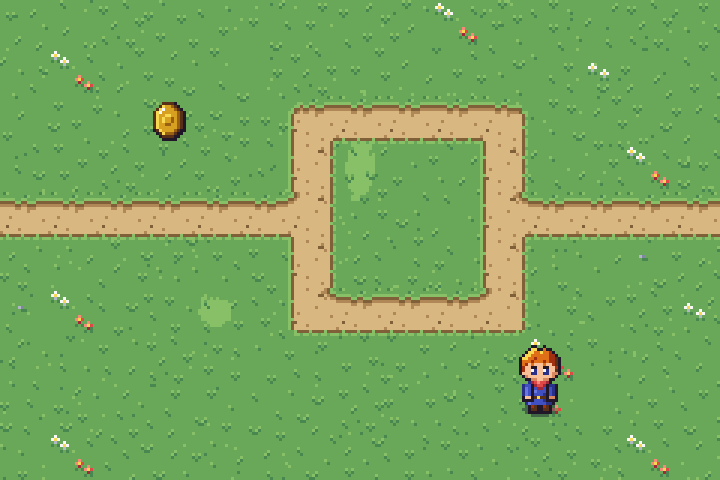
Forklaring av koden
Bla gjennom forklaringen før du begynner, og gå tilbake til den når du står fast.
Den viser koden i steg2.py, hva som skjer på skjermen, og hva programmet husker.
Der det står OPPGAVE, er det du som skal skrive koden.
Åpne forklaringen i stort vindu ↗ · Neste: mellomrom eller → (klikk i forklaringen først)
Oppgavene
I steg2.py står det OPPGAVE og pass der
det mangler kode. Bytt ut pass med din egen kode. Kjør spillet ofte!
1. Raskere helt variabel
FARTsier hvor mange piksler helten flytter seg hver gangoppdater()kjøres. Nå er den 1. Bytt den til 2 og kjør. Prøv gjerne 5 også – men velg 2 til slutt.Hint 1
Linja står rett over
# ---------- SPILL-LØKKA ----------.Hint 2
FART = 22. Gå til venstre if
Se på de tre linjene for høyre piltast:
if tast_holdes("hoyre"): helt.x = helt.x + FART helt.bilde = "helt_hoyre_1"Kopier dem og bytt ut
passunder# OPPGAVE 2med kopien. Endre så tre ting:"hoyre"blir"venstre"+blir-(x skal bli mindre)- bildet blir
"helt_venstre_1"
Hint 1
Innrykket betyr noe!
ifskal stå på linje med# OPPGAVE 2, og de to linjene under skal ha fire mellomrom mer.Hint 2
if tast_holdes("venstre"): helt.x = helt.x - FART helt.bilde = "helt_venstre_1"3. Gå ned if
Gjør det samme for pil ned. Nå er det y som skal endres, ikke x. y blir større når helten går ned. Tasten heter
"ned", og bildet heter"helt_ned_1".Hint 1
Kopier blokka fra oppgave 2 og bytt
xmedy.Hint 2
if tast_holdes("ned"): helt.y = helt.y + FART helt.bilde = "helt_ned_1"4. Gå opp if
Og til slutt pil opp: y blir mindre. Tasten heter
"opp", og bildet heter"helt_opp_1". Nå kan helten gå overalt – også rett ut av skjermen. Det fikser vi i neste steg.Vis hint
if tast_holdes("opp"): helt.y = helt.y - FART helt.bilde = "helt_opp_1"
Ekstra utfordringer
For deg som blir ferdig tidlig. Her er det ingen hull i koden – du bestemmer selv hvordan.
A. Tilbake til start
Når du trykker tasten
t, skal helten hoppe tilbake til midten (x = 112, y = 64).Vis hint
if tast_holdes("t"):og så to linjer som setterhelt.xoghelt.y.B. WASD
Mange spill bruker W, A, S og D i stedet for piltastene. Få begge deler til å virke.
Vis hint
if tast_holdes("hoyre") or tast_holdes("d"):
Hold deg på skjermen
Nå kan helten gå rett ut av skjermen og forsvinne. I dag stopper du ham ved kantene, og du skriver en tekst på skjermen.
Kom i gang
Åpne steg3.py og kjør den. Gå mot venstre kant – der stopper helten. Gå mot høyre, opp eller ned – der forsvinner han. Finn # ---- hold helten på skjermen ---- i oppdater() og se hvordan venstre kant er laget.
Fil: steg3.py
Teori til dette steget: 3. Koordinater og skjermen · 4. Tekst og f-strenger · 5. Valg: if, elif og else
Nytt i dag
- < mindre enn, > større enn
- if helt.x < 0:
- Tekst("Hei", x, y)
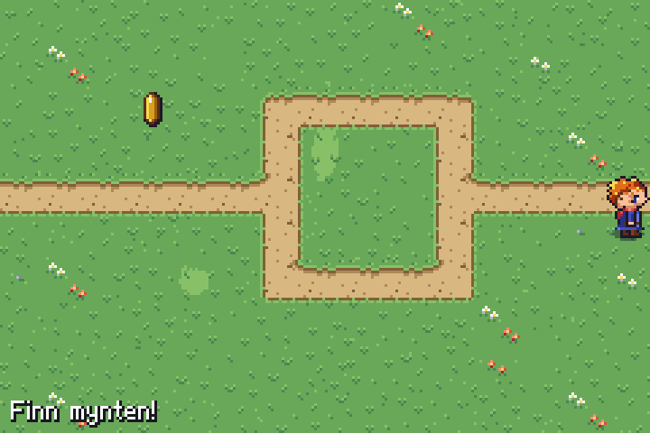
Forklaring av koden
Bla gjennom forklaringen før du begynner, og gå tilbake til den når du står fast.
Den viser koden i steg3.py, hva som skjer på skjermen, og hva programmet husker.
Der det står OPPGAVE, er det du som skal skrive koden.
Åpne forklaringen i stort vindu ↗ · Neste: mellomrom eller → (klikk i forklaringen først)
Oppgavene
I steg3.py står det OPPGAVE og pass der
det mangler kode. Bytt ut pass med din egen kode. Kjør spillet ofte!
1. En melding Tekst
Skriv «Finn mynten!» nederst til venstre på skjermen. Linja med
melding = Tekst(...)er der allerede, men teksten er tom:"". SkrivFinn mynten!mellom fnuttene.Vis hint
melding = Tekst("Finn mynten!", 4, 148, skygge="#181820")2. Høyre kant if og >
Venstre kant er laget slik:
if helt.x < 0: helt.x = 0Det betyr: er x mindre enn 0, setter vi den tilbake til 0.
Høyre kant er 240 piksler. Helten er 16 piksler bred, så x kan være høyst 240 − 16 = 224. Er x større enn 224, setter du den tilbake til 224.
Hint 1
>betyr «større enn».Hint 2
if helt.x > 224: helt.x = 2243. Toppen if og <
Nå er det y. Toppen av skjermen er y = 0. Er y mindre enn 0, setter du den tilbake til 0.
Hint 1
Det er nesten det samme som venstre kant, med y i stedet for x.
Hint 2
if helt.y < 0: helt.y = 04. Bunnen if og >
Bunnen av skjermen er 160 piksler. Helten er 24 piksler høy, så y kan være høyst 160 − 24 = 136.
Vis hint
if helt.y > 136: helt.y = 136
Ekstra utfordringer
For deg som blir ferdig tidlig. Her er det ingen hull i koden – du bestemmer selv hvordan.
A. Farger
Gi meldingen en annen farge:
Tekst("Finn mynten!", 4, 148, farge="yellow", skygge="#181820"). Prøv også"red","#88c860"ellerstorrelse=2.B. Rundt jorda
I noen spill kommer du inn på venstre side når du går ut til høyre. Lag det slik for høyre og venstre kant.
Vis hint
Går helten ut til høyre (
helt.x > 224), setter duhelt.x = 0i stedet for 224.
Plukk opp mynten
I dag kan helten ta mynten! Når han går på den, skal det si «pling», mynten skal hoppe til et nytt sted, og du får ett poeng.
Kom i gang
Åpne steg4.py og kjør den. Gå bort til mynten. Den hopper sidelengs, men bare sidelengs! Finn funksjonen ta_mynt(). Den kjøres hver gang helten treffer mynten – se nederst i oppdater().
Fil: steg4.py
Teori til dette steget: 2. Variabler og regning · 4. Tekst og f-strenger · 5. Valg: if, elif og else · 7. Funksjoner · 8. Lokale og globale variabler · 12. Figurer, objekter og kollisjon · 14. Tilfeldighet og sannsynlighet
Nytt i dag
- helt.treffer(mynt)
- funksjon: def ta_mynt():
- random.randint(0, 224)
- poeng = poeng + 1
- global
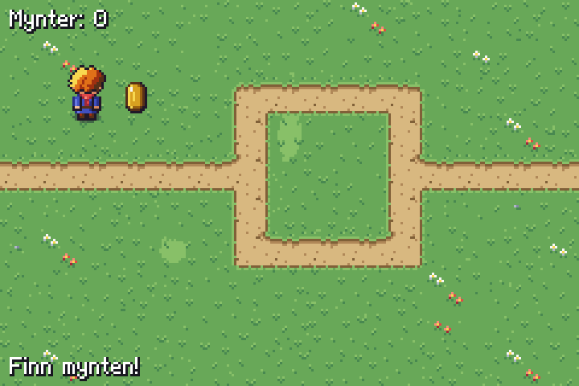
Forklaring av koden
Bla gjennom forklaringen før du begynner, og gå tilbake til den når du står fast.
Den viser koden i steg4.py, hva som skjer på skjermen, og hva programmet husker.
Der det står OPPGAVE, er det du som skal skrive koden.
Åpne forklaringen i stort vindu ↗ · Neste: mellomrom eller → (klikk i forklaringen først)
Oppgavene
I steg4.py står det OPPGAVE og pass der
det mangler kode. Bytt ut pass med din egen kode. Kjør spillet ofte!
1. Mynten hopper random
Mynten får en tilfeldig x med denne linja:
mynt.x = random.randint(0, 224)
random.randint(0, 224)gir et tilfeldig tall fra 0 til 224. Skriv en lik linje formynt.y. Mynten er 16 piksler høy, så y skal være fra 0 til 144.Vis hint
mynt.y = random.randint(0, 144)
2. Pling! lyd og effekt
Spill lyden
"mynt"og lag glitter der helten står. Det er to linjer:spill_lyd("mynt") effekt("glitter", helt.midt_x, helt.midt_y)helt.midt_xoghelt.midt_yer midten av helten.Vis hint
Begge linjene skal ha samme innrykk som
mynt.x = ...(fire mellomrom).3. Tell poengene variabel som teller
Variabelen
poenger 0 når spillet starter. Hver gang helten tar mynten, skal den bli én mer. Det skrives slik:poeng = poeng + 1
Les det som «ny poeng er gammel poeng pluss 1». Linja under viser poengene på skjermen.
Øverst i funksjonen står
global poeng. Det trengs fordi funksjonen endrer en variabel som ligger utenfor funksjonen.Vis hint
Står det
UnboundLocalError? Da manglerglobal poeng– den skal stå der fra før.4. Bra! endre tekst
Når helten tar mynten, skal teksten nederst bli «Bra! Finn en til!». Du endrer teksten i en
Tekstslik:melding.tekst = "Bra! Finn en til!"
Vis hint
Linja skal stå inni if-setningen, rett under
ta_mynt(), med samme innrykk.
Ekstra utfordringer
For deg som blir ferdig tidlig. Her er det ingen hull i koden – du bestemmer selv hvordan.
A. +1
Vis en liten «+1» som flyter opp fra helten når han tar mynten:
flytende_tekst("+1", helt.x, helt.y).Vis hint
Skriv linja inni
ta_mynt().B. Andre effekter
Prøv andre effekter enn
"glitter":"poff","hjerte","gnister"eller"ild". Alle effektene står under Oppslag.C. Rikere
Gi 5 poeng for hver mynt i stedet for 1.
Pass deg for slimet!
Nå kommer et slim som kryper etter helten. Tar det deg, mister du et liv. Når livene er brukt opp, er det GAME OVER.
Kom i gang
Åpne steg5.py og kjør den. Slimet nede i hjørnet kryper mot helten – men bare sidelengs. Finn funksjonene flytt_slim() og au().
Fil: steg5.py
Teori til dette steget: 2. Variabler og regning · 5. Valg: if, elif og else · 7. Funksjoner · 8. Lokale og globale variabler · 12. Figurer, objekter og kollisjon · 13. Tilstand: spillet husker hva som skjer
Nytt i dag
- en fiende som følger etter
- liv = liv - 1
- == er lik
- True og False
- return
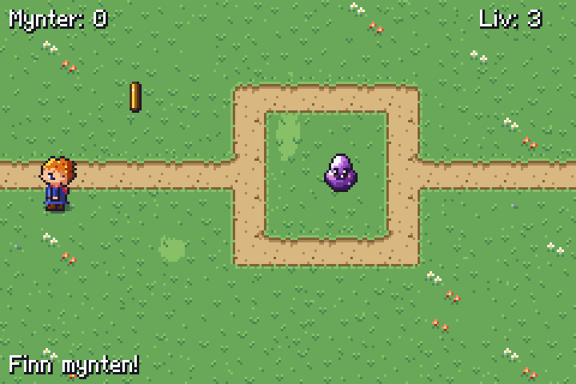
Forklaring av koden
Bla gjennom forklaringen før du begynner, og gå tilbake til den når du står fast.
Den viser koden i steg5.py, hva som skjer på skjermen, og hva programmet husker.
Der det står OPPGAVE, er det du som skal skrive koden.
Åpne forklaringen i stort vindu ↗ · Neste: mellomrom eller → (klikk i forklaringen først)
Oppgavene
I steg5.py står det OPPGAVE og pass der
det mangler kode. Bytt ut pass med din egen kode. Kjør spillet ofte!
1. Lett eller vanskelig? desimaltall
slim_fartsier hvor fort slimet kryper. 0.5 betyr en halv piksel hver gangoppdater()kjøres. Prøv0.3og1, og velg det du synes er best. I Python skriver vi desimaltall med punktum, ikke komma.Vis hint
Linja
slim_fart = 0.5står øverst, under slimet.2. Opp og ned if
Slimet følger helten sidelengs:
if slim.x < helt.x: slim.x = slim.x + slim_fart if slim.x > helt.x: slim.x = slim.x - slim_fartEr slimet til venstre for helten (mindre x), kryper det mot høyre. Skriv det samme med y, så slimet også kryper opp og ned.
Hint 1
Kopier de fire linjene og bytt alle
xmedy.Hint 2
if slim.y < helt.y: slim.y = slim.y + slim_fart if slim.y > helt.y: slim.y = slim.y - slim_fart3. Au! variabel som teller ned
Når slimet tar helten, kjøres
au(). Helten blinker, og slimet hopper til et hjørne. Men han mister ikke liv ennå! Skriv linja som gjørlivén mindre – det er sompoeng = poeng + 1, bare med minus.Vis hint
liv = liv - 1
4. GAME OVER if og ==
Når
liver blitt 0, er spillet over. Da skal tre ting skje:vis_stor("GAME OVER")skriver det stort på skjermenspill_lyd("game_over")ferdig = True– da stopperoppdater()alt (se øverst i den)
==betyr «er lik» og sjekker. Ett=betyr «bli» og endrer.Hint 1
Begynn med
if liv == 0:og sett de tre linjene inni, med fire mellomrom mer innrykk.Hint 2
if liv == 0: vis_stor("GAME OVER") spill_lyd("game_over") ferdig = True
Ekstra utfordringer
For deg som blir ferdig tidlig. Her er det ingen hull i koden – du bestemmer selv hvordan.
A. Flaggermus
Bytt slimet ut med en flaggermus: bildene heter
"flaggermus_1"og"flaggermus_2".Vis hint
Endre både
Figur(...)ogslim.animer(...).B. Rist mindre
rist_skjerm()iau()rister hele skjermen. Prøvrist_skjerm(1, 6)– ett sekund og mer risting. Eller fjern den.C. Et slim til
Lag et slim til,
slim2, som starter i et annet hjørne og kryper etter helten.Vis hint
Du trenger en ny
Figur, enflytt_slim2()og enif helt.treffer(slim2):ioppdater().
Vinn spillet
I dag blir spillet ferdig: det får musikk, slimet blir raskere for hver mynt du tar, du VINNER når du har 10 mynter, og du kan spille igjen med Enter.
Kom i gang
Åpne steg6.py og kjør den. Alt fra steg 5 virker. Nå skal du gjøre spillet ferdig – og etterpå kan du gjøre det til ditt eget med ekstraoppgavene og Byggesett-fanen.
Fil: steg6.py
Teori til dette steget: 2. Variabler og regning · 5. Valg: if, elif og else · 6. Spill-løkka, taster og tellere · 7. Funksjoner · 8. Lokale og globale variabler · 13. Tilstand: spillet husker hva som skjer · 15. Filer, feilmeldinger og feilsøking
Nytt i dag
- spill_musikk("navn")
- slim_fart = slim_fart + 0.1
- if poeng == 10:
- tast_trykket("enter")
- nytt_spill()
Forklaring av koden
Bla gjennom forklaringen før du begynner, og gå tilbake til den når du står fast.
Den viser koden i steg6.py, hva som skjer på skjermen, og hva programmet husker.
Der det står OPPGAVE, er det du som skal skrive koden.
Åpne forklaringen i stort vindu ↗ · Neste: mellomrom eller → (klikk i forklaringen først)
Oppgavene
I steg6.py står det OPPGAVE og pass der
det mangler kode. Bytt ut pass med din egen kode. Kjør spillet ofte!
1. Musikk spill_musikk
Start musikken
"oververden"medspill_musikk("oververden"). Prøv også"landsby"og"tittel"– hvilken passer best?Vis hint
Linja skal stå helt til venstre (uten innrykk) under
# OPPGAVE 1.2. Slimet blir raskere variabel som vokser
Hver gang helten tar en mynt, skal slimet bli litt raskere:
slim_fartskal bli 0.1 mer enn før. Skriv det ita_mynt(). Det er sompoeng = poeng + 1.Vis hint
slim_fart = slim_fart + 0.1
3. Du vant! if og ==
Har helten 10 mynter, har du vunnet! Se hvordan GAME OVER er laget i
au(), og lag det samme ita_mynt():- sjekk om
poeng == 10 vis_stor("DU VANT!")spill_lyd("seier")helt.bilde = "helt_jubel"ferdig = True
Vis hint
if poeng == 10: vis_stor("DU VANT!") spill_lyd("seier") helt.bilde = "helt_jubel" ferdig = True- sjekk om
4. Spill igjen tast_trykket
Når spillet er over, står det «Trykk Enter for å spille igjen». Få det til å virke: trykker spilleren
"enter", skalnytt_spill()kjøres. Funksjonennytt_spill()er ferdig – den setter alt tilbake slik det var i starten.tast_trykketer sant bare i det øyeblikket tasten trykkes ned, ikke hele tiden den holdes.Vis hint
if tast_trykket("enter"): nytt_spill()Den skal stå inni
if ferdig:, overreturn.
Ekstra utfordringer
For deg som blir ferdig tidlig. Her er det ingen hull i koden – du bestemmer selv hvordan.
A. Tidtaker
Vis hvor mange sekunder spillet har vart.
tid()gir sekunder siden spillet startet.Vis hint
Lag en
Tekstøverst i midten, og skrivklokke.tekst = str(int(tid()))ioppdater().B. Hjerte gir liv
Legg ut et hjerte (
"hjerte"). Tar helten det, får han ett liv mer, og hjertet hopper til et nytt sted.Vis hint
Se hvordan mynten er laget, og lag en
ta_hjerte()som ligner påta_mynt().C. Ditt eget spill
Gjør spillet til ditt eget: et nytt kart, en annen skatt (for eksempel
"edelstein_rod"), en annen fiende, andre lyder. Se Byggesett og Oppslag.D. Videre
Klar for mer? Eventyret begynner med det samme som du nå kan: kart, piltaster, kanter og
if. Spør læreren om du kan prøve det.
Når du står fast
Alt spillmotoren kan, og navnene på alle bilder, lyder og all musikk. Du finner det samme
øverst i spillmotor.py.
Grunnmuren
from spillmotor import *
helt = Figur("helt_ned_1", 7 * RUTE, 4 * RUTE)
skritt = 0
def oppdater(): # kjøres 60 ganger i sekundet
global skritt # trengs når du ENDRER en variabel som står utenfor
if tast_holdes("hoyre"):
helt.x = helt.x + 1
skritt = skritt + 1
start(tittel="Mitt spill") # helt nederstSkjermen er 15 × 10 ruter. Hver rute er 16 × 16 piksler, altså 240 × 160 piksler
til sammen. x øker mot høyre, y øker nedover.
Rute (kolonne 3, rad 2) har øverste venstre hjørne i x = 3 * RUTE, y = 2 * RUTE.
Figurer, tekst og firkanter
| Kode | Hva den gjør |
|---|---|
Figur("navn", x, y) | en figur med et bilde fra mappen bilder/ |
figur.x, figur.y | posisjonen (øverste venstre hjørne) |
figur.bilde = "navn" | bytter bilde – slik animerer du |
figur.animer(["a", "b"], fart=10) | bytter bilde automatisk (lavere fart = raskere) |
figur.bredde, figur.hoyde | størrelsen på bildet |
figur.midt_x, figur.midt_y | midtpunktet |
figur.treffer(annen) | True hvis figurene overlapper |
Figur(..., treffboks=(2, 16, 12, 8)) | bare denne delen av bildet kan treffes (her: føttene) |
figur.synlig = False | skjuler figuren |
figur.fjern() | fjerner figuren for godt |
Figur(..., skygge=True) | liten skygge under føttene |
Figur(..., lag=0) | lag 0 = bakgrunn, 1 = figurer, 2 = effekter, 3 = tekst |
Tekst("Hei", x, y, farge="white", skygge="black") | tekst med pikselskrift. storrelse=2 gir dobbel størrelse, maks_bredde=200 bryter linjene |
tekst.tekst = "Ny tekst" | bytter teksten |
Rektangel(x, y, bredde, hoyde, "red") | en fylt firkant |
Kart og taster
| Kode | Hva den gjør |
|---|---|
tegn_kart(kart, ruter) | tegner et kart der hvert tegn er én rute |
rute_ved(x, y) | hvilket tegn som ligger på piksel x, y (eller None utenfor) |
endre_rute(kolonne, rad, "tegn") | bytter ut én rute, f.eks. når en dør åpnes |
tast_holdes("venstre") | True så lenge tasten holdes nede – til å gå |
tast_trykket("mellomrom") | True bare i øyeblikket tasten trykkes – til å slå og velge |
Effekter, lyd og tid
| Kode | Hva den gjør |
|---|---|
effekt("treff", x, y) | ferdig effekt: poff, treff, glitter, plask, stov, blader, gnister, hjerte, ild, vann, blad, lyn, stein, slag |
partikler(x, y, antall=10, farger=["red"], fart=1) | din egen sprut av piksler |
flytende_tekst("-3", x, y) | tekst som stiger opp og forsvinner |
figur.glimt() · figur.blink(1) · figur.rist() | figuren blir hvit · blinker i 1 sekund · rister |
rist_skjerm() · blink_skjerm("white") | hele skjermen rister · blinker |
overgang(funksjon) | toner ut, kaller funksjonen, toner inn. stil="kamp" gir blink og striper |
i_overgang() | True mens en overgang pågår |
spill_lyd("navn") · spill_musikk("navn") | spiller en lyd · starter musikk |
etter(2, funksjon) | kaller funksjonen om 2 sekunder (uten parenteser bak navnet!) |
tid() | sekunder siden spillet startet |
Feilmeldinger du kommer til å se
| Meldingen | Hva den betyr |
|---|---|
Fant ikke bildet "..." | Navnet er stavet feil, eller bildet finnes ikke. Motoren foreslår navn som ligner. |
Kjenner ikke tasten "..." | Tastenavnet er feil. Bruk "venstre", "hoyre", "opp", "ned", "mellomrom", "enter" eller en bokstav. |
NameError: name '...' is not defined | Du bruker en variabel som ikke finnes ennå – stavefeil, eller den lages lenger ned. |
UnboundLocalError | Du endrer en variabel inni oppdater() uten å skrive global navn øverst i funksjonen. |
IndentationError | Innrykket stemmer ikke. Alt inni en if eller funksjon må ha like mye innrykk. |
IndexError: list index out of range | Du spør etter en plass i en liste som ikke finnes – ofte en rute utenfor kartet. |
TypeError: ... 'NoneType' | Noe er None der du ventet en verdi. Glemt return i en funksjon? |
Alle bildene
Skriv navnet uten .png, for eksempel Figur("blomsterbed", 0, 0).
Størrelsen er 16 × 16 piksler hvis ikke annet står i oppgaven.

blomsterbedbusk
edelstein_bla
edelstein_gronnedelstein_rod
fx_blad_1
fx_blad_2
fx_blad_3fx_blad_4
fx_glitter_1fx_glitter_2fx_glitter_3fx_hjerte_1
fx_hjerte_2
fx_ild_1
fx_ild_2fx_ild_3fx_ild_4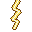
fx_lyn_1fx_lyn_2
fx_lyn_3fx_plask_1
fx_plask_2
fx_plask_3
fx_poff_1fx_poff_2fx_poff_3
fx_poff_4
fx_slag_1
fx_slag_2
fx_slag_3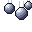
fx_stein_1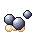
fx_stein_2
fx_stein_3
fx_stov_1
fx_stov_2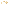
fx_stov_3
fx_treff_1
fx_treff_2fx_treff_3
fx_vann_1
fx_vann_2fx_vann_3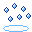
fx_vann_4flaggermus_1flaggermus_2gress
gress_1gress_2gress_3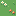
gress_blomst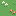
gress_blomst_2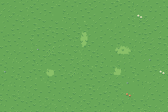
gress_stor
helt_hoyre_1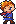
helt_hoyre_2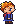
helt_hoyre_3
helt_hoyre_4
helt_jubel
helt_ned_1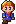
helt_ned_2
helt_ned_3
helt_ned_4
helt_opp_1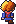
helt_opp_2
helt_opp_3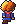
helt_opp_4
helt_venstre_1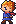
helt_venstre_2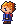
helt_venstre_3
helt_venstre_4hjerte
hud_hjerte_fullhud_hjerte_halv
hud_hjerte_tom
hud_mynt
kiste_aapen
kiste_lukketmynt_1mynt_2
mynt_3mynt_4nokkel
skygge
slim_1slim_2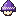
sopphopper_1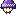
sopphopper_2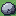
stein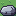
stein_2
sti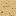
sti_2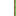
stikant_hoyrestikant_indre_nh
stikant_indre_nvstikant_indre_oh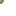
stikant_indre_ov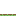
stikant_ned
stikant_opp
stikant_venstrestikant_ytre_nhstikant_ytre_nvstikant_ytre_ohstikant_ytre_ov
stubbe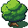
tre
tre_2Lyder
spill_lyd("navn")
aubumpgame_overglitterhjertekistemyntnokkelseiervelg
Musikk
spill_musikk("navn") – spilles om og om igjen til du bytter eller kaller
stopp_musikk().
landsbyoververdentittel